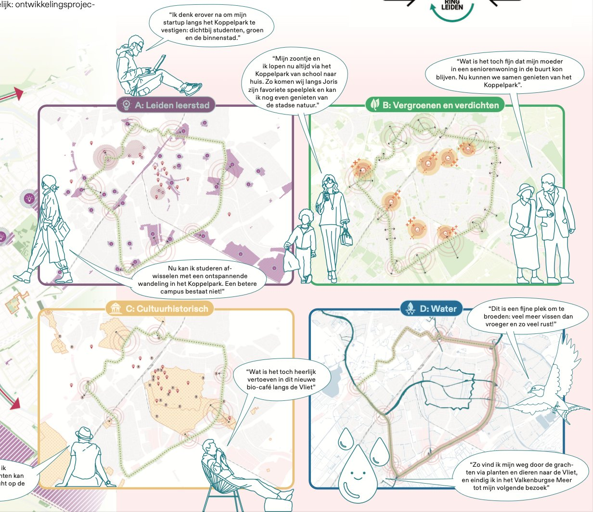
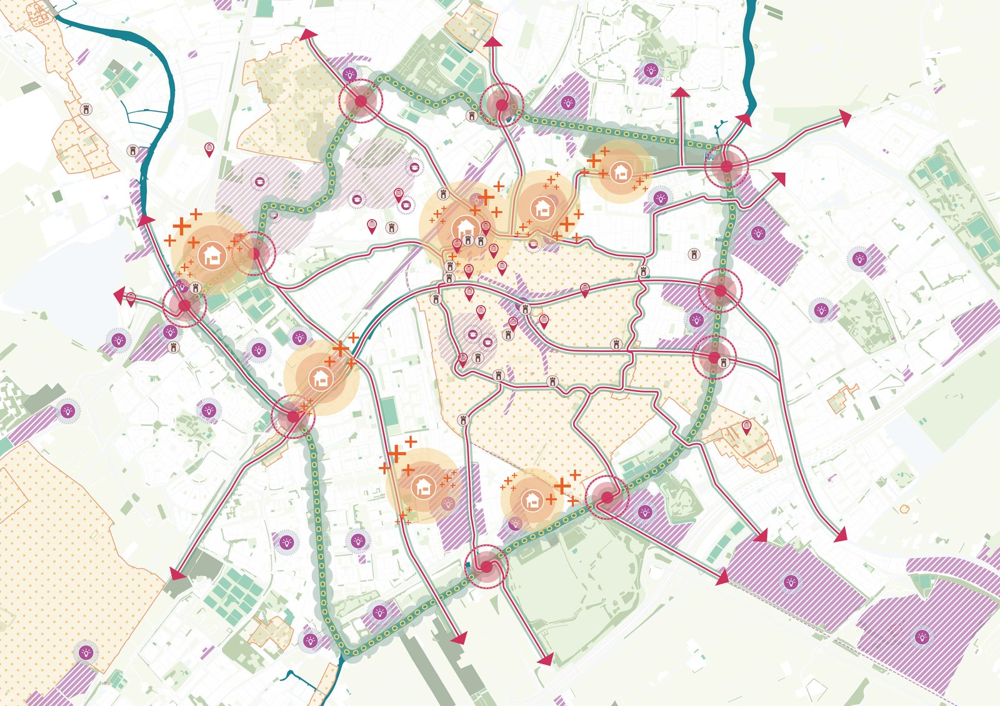
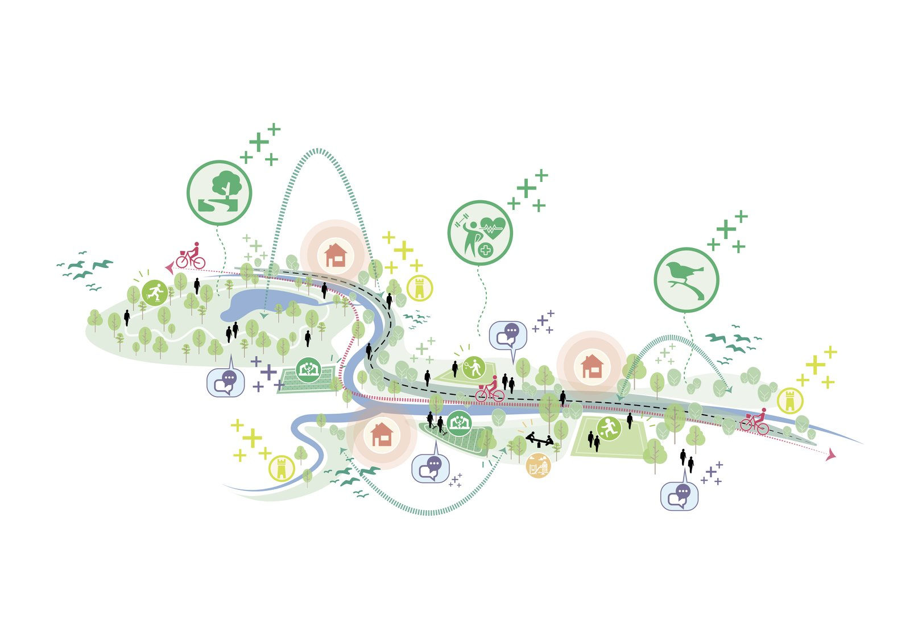
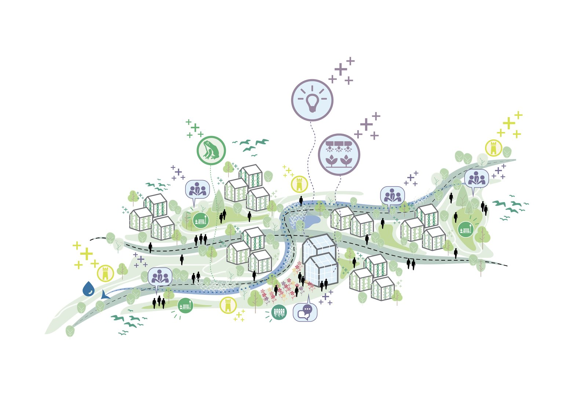

A competition entry that links Leiden’s second green ring into one park.

The municipality of Leiden launched a competition for its Tweede Groene Ring: a chain of parks, water and neighbourhoods around the city. Our answer: the ‘Koppelpark’. Rings look whole on a map, but on the ground you experience fragments. Learning from the success of Leiden’s Singelpark, we proposed stringing the existing pieces together like beads on a necklace, through four schakels (links): Leiden as a city of learning, the housing challenge, cultural-historical places, and water as the connecting thread.
Personas of Leiden residents showed how the park would work in daily life. With DELVA and Afdeling Buitengewone Zaken we turned this into a complete entry in eight weeks.
I led the competition from start to finish, without senior back-up: assembling the team with DELVA and Afdeling Buitengewone Zaken, running the brainstorms, working through the competition rules, guarding the deadline and shaping the concept along the way. I presented our entry to a jury of residents, urbanists and landscape architects.


